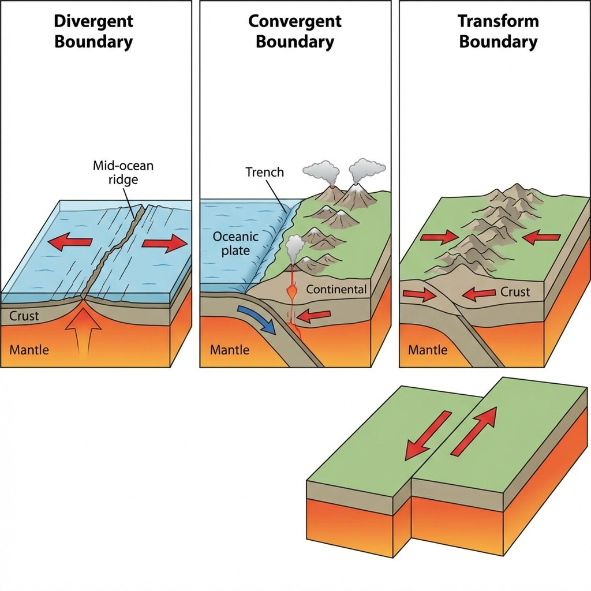
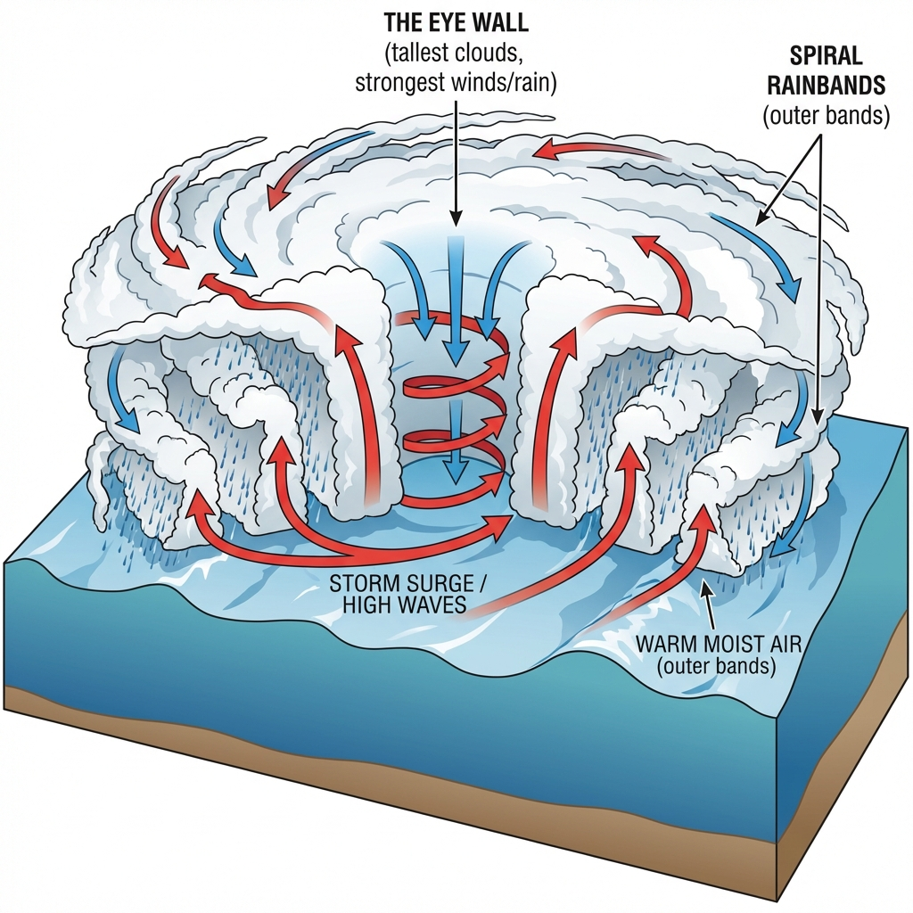

Types and Classifications of Hazards: A Global Perspective
Introduction
Hazards are latent threats within our environment that hold the potential to cause harm. They are the precursors to disasters, transforming from a state of potentiality to reality when they intersect with vulnerable human systems. A robust understanding of hazard types is the cornerstone of effective Disaster Risk Reduction (DRR). By classifying hazards based on their origin, nature, and characteristics, policymakers, scientists, and emergency managers can develop specialized mitigation strategies, early warning systems, and response protocols.
The United Nations Office for Disaster Risk Reduction (UNDRR) and the International Science Council (ISC) have developed a comprehensive Hazard Definition and Classification Review to standardize these definitions globally. This standardization allows countries to compare data and share best practices. This document explores these categories in detail, supported by global statistics, historical case studies, and scientific explanations.
1. Geological Hazards (Geophysical)
Geological hazards (or geohazards) originate from internal earth processes. These events are driven by tectonic activity, gravity, and the geological composition of the earth's crust. They are often characterized by low frequency but extremely high impact ("Low Probability, High Consequence" events).
Key Classifications
1. Earthquakes
- Definition: Sudden release of energy in the Earth's crust that creates seismic waves. This occurs primarily along fault lines where tectonic plates interact.
- Mechanism:
- Elastic Rebound Theory: Rocks on either side of a fault are subjected to stress. They bend and deform until the stress exceeds the friction. The rocks then snap back (rebound) to an unstrained position, releasing energy.
- Seismic Waves: The energy travels as Body Waves (P-waves, S-waves) and Surface Waves (Love, Rayleigh). Surface waves cause the most damage.
- Measurement:
- Magnitude: Measure of energy released (Moment Magnitude Scale - Mw). It is objective and logarithmic (a Mw 7.0 releases 32x more energy than a Mw 6.0).
- Intensity: Measure of shaking and damage at a specific location (Modified Mercalli Intensity - MMI, Scale I to XII). It is subjective.
- Secondary Hazards: Landslides, Tsunamis, Liquefaction (soil turning to liquid during shaking), and Fires (from broken gas lines).
 Fig 1: Types of Tectonic Plate Boundaries: Divergent (create crust), Convergent (destroy crust), and Transform (conserve crust).
Deep Dive Case Study: Turkey-Syria Earthquake (February 2023)
Magnitude:* Mw 7.8 and Mw 7.5 (Doublet Earthquake). * Mechanism: Strike-slip faulting along the East Anatolian Fault. Impact: Over 59,000 deaths. * Key Failure: Widespread "Pancake Collapse" of buildings. This revealed a massive failure in enforcing building codes. Despite modern regulations on paper, many buildings lacked the ductile detailing (steel reinforcement) required to withstand shaking. * Lesson:* "Earthquakes don't kill people, buildings do." Enforcement of building codes is the primary mitigation strategy for geological hazards.
2. Volcanic Activity
- Definition: The eruption of molten rock (magma), volcanic ash, and gases from a magma chamber to the surface.
- Key Hazards:
- Pyroclastic Flows: Fast-moving currents of hot gas (1000°C) and rock (tephra) moving at 700 km/h. Deadly and unstoppable.
- Lahars: Volcanic mudflows resulting from ash mixing with rain or melting snow. Can travel dozens of kilometers.
- Ashfall: Can collapse roofs, destroy jet engines, and cause respiratory failure.
- Beneficial Aspect: Volcanic soils are extremely fertile, which is why millions live near active volcanoes (e.g., Java, Indonesia).
3. Tsunamis (Seismic Sea Waves)
- Definition: A series of giant ocean waves caused by large-scale displacement of the ocean water.
- Causes: Undersea earthquakes (subduction zones), volcanic eruptions (Krakatoa), underwater landslides, or meteorite impacts.
- Physics:
- Deep Ocean: Waves travel at the speed of a jetliner (800 km/h) but are only a few centimeters high.
- Shoaling Effect: As the wave approaches the coast (shallow water), velocity decreases but amplitude (height) increases drastically, turning into a "wall of water."
Deep Dive Case Study: Indian Ocean Tsunami (2004)
Trigger:* Mw 9.1-9.3 earthquake off Sumatra. * Spread: Waves hit Indonesia (15 mins), Sri Lanka (2 hrs), India (3 hrs), and even South Africa (8 hrs). Impact: ~227,000 deaths across 14 countries. * Key Failure: Lack of an Early Warning System in the Indian Ocean. People watched the water recede (drawback) and went to collect fish, not realizing a wave was coming. * Outcome: Establishment of the Indian Ocean Tsunami Warning System (IOTWS)*.
4. Landslides
- Definition: The movement of a mass of rock, debris, or earth down a slope due to gravity.
- Triggers:
- Natural: Heavy rainfall (lubricating soil pore pressure), earthquakes, volcanic shaking.
- Anthropogenic: Deforestation (loss of root cohesion), road cutting (undercutting slope), fluid injection.
- Resource: Geological Survey of India (GSI)
Global Statistics and Impact (Geological)
Geological hazards account for a smaller percentage of frequent events compared to weather hazards but are disproportionately deadly.
- Mortality: According to CRED/EM-DAT, earthquakes were responsible for the highest number of deaths among all natural hazards in the period 2000–2019.
- Economic Loss: The 2011 Tohoku earthquake and tsunami is the costliest disaster in history ($360 billion).
2. Hydro-Meteorological Hazards
These hazards are of atmospheric, hydrological, or oceanographic origin. They are the most frequent hazards globally and are strongly influenced by Climate Change.
Key Classifications
1. Floods
- Definition: An overflow of water that submerges land that is usually dry.
- Types:
- Riverine (Fluvial): Gradual rise in river levels due to upstream rain. Predictable.
- Pluvial (Urban): Localized flooding when rainfall exceeds drainage capacity. Independent of water bodies.
- Flash Floods: Rapid flooding (under 6 hours) in low-lying areas, typical in arid regions or mountain valleys (e.g., Kedarnath 2013).
- Coastal Floods: Storm surges driven by low pressure and wind.
2. Tropical Cyclones (Hurricanes/Typhoons)
- Definition: Rapidly rotating storm systems characterized by a low-pressure center (Eye), strong winds, and a spiral arrangement of thunderstorms.
- Formation Conditions:
- Sea Surface Temperature (SST) > 26.5°C.
- Coriolis Force (to create rotation).
- Low vertical wind shear.
- Nomenclature: "Hurricanes" (Atlantic/East Pacific), "Typhoons" (West Pacific), "Cyclones" (Indian Ocean).
 Fig 2: Anatomy of a Tropical Cyclone showing the Eye (calm), Eyewall (most destructive), and Rainbands.
Success Story: Cyclone Phailin (2013) vs 1999 Odisha Super Cyclone
1999 Super Cyclone:* Hit Odisha with 260 km/h winds. 10,000+ deaths. Minimum prep. * Cyclone Phailin (2013): Similar intensity. Action: Government evacuated 1.2 million people in 24 hours (Zero Casualty Target). * Result: Death toll < 50. * Lesson:* Early Warning Systems and Last Mile Connectivity save lives.
3. Droughts (Creeping Hazard)
- Definition: A prolonged period of abnormally low rainfall. Unlike other hazards, it has a slow onset and no clear end date.
- Types:
- Meteorological: Deficiency in rainfall measurements.
- Agricultural: Soil moisture deficiency affecting plant health.
- Hydrological: Reduced water levels in reservoirs/aquifers (lag effect).
- Socio-economic: Disruption of supply and demand for economic goods (water).
Deep Dive Case Study: Cape Town 'Day Zero' (2018)
Event:* The city of Cape Town, South Africa, nearly ran out of water. * Cause: Three consecutive dry winters (1-in-400 year event) + High Consumption. Response: Drastic rationing (50L per person/day). "Day Zero" was the predicted date taps would be turned off. * Outcome:* Detailed conservation avoided Day Zero, but it showed the vulnerability of modern cities to hydrological drought.
4. Extreme Temperatures
- Heatwave: Extended period of excessively hot weather, often with high humidity.
- Wet Bulb Temperature: A measure of heat stress. If Wet Bulb > 35°C, humans cannot cool down by sweating and will die of hyperthermia.
- Cold Wave: Rapid fall in temperature affecting agriculture and health.
Global Statistics (WMO Atlas 1970–2021)
According to the World Meteorological Organization (WMO), weather, climate, and water hazards accounted for 50% of all disasters and 74% of economic losses.
- Frequency: Floods are the most frequent disaster (44% of all events).
- Mortality: Tropical Cyclones are the deadliest weather hazard.
- Economic Loss: North America and Asia suffer the highest absolute economic losses due to high asset value.
Case Study: 2022 Pakistan Floods
- Event: "Monsoon on Steroids."
- Cause: Combination of melting glaciers (Third Pole) and a record-breaking monsoon.
- Impact: 1/3rd of Pakistan submerged. 33 million people affected. $30 Billion loss.
- Significance: Pivotal moment for "Loss and Damage" (Climate Justice) discussions at COP27.
3. Biological Hazards
Biological hazards are of organic origin or conveyed by biological vectors, including pathogenic microorganisms, toxins, and bioactive substances.
- Epidemic vs Pandemic:
- Epidemic: Sudden increase in cases in a specific area (e.g., Ebola in West Africa).
- Pandemic: Global spread (e.g., COVID-19, Spanish Flu 1918).
- Zoonosis: Diseases jumping from animals to humans (75% of emerging diseases are zoonotic). Drivers include deforestation and wildlife trade.
- Insect Plagues: Locust swarms threatening food security.
4. Technological Hazards (Man-Made)
Failures in technology, industrial processes, or infrastructure.
- Chemical: Toxic leaks (Bhopal, Seveso).
- Nuclear: Radiation release (Chernobyl, Fukushima).
- Transport: Air, Road, Rail, Sea accidents.
- Structural Collapse: Building, Bridge, or Dam failures (e.g., Morbi Bridge collapse 2022).
Comparative Analysis of Hazard Characteristics
To plan effectively, we must understand the "Personality" of each hazard.
| Characteristic | Geological (e.g., Quake) | Hydro-Met (e.g., Cyclone) | Biological (e.g., Pandemic) |
|---|---|---|---|
| Speed of Onset | Sudden (Seconds) | Gradual (Days) | Varied (Days to Weeks) |
| Warning Time | None to Seconds | 48-72 Hours | Weeks (Surveillance) |
| Duration | Seconds/Minutes | Days | Months/Years |
| Areal Extent | Regional | Trans-boundary | Global |
| Primary Mitigation | Structural Codes | Early Warning Systems | Vaccination/Quarantine |
📝 Self Assessment
Multiple Choice Questions
-
Which scale measures the total energy released by an earthquake?
Click to show Options
a) Mercalli Intensity Scale
b) Richter Magnitude Scale
c) Moment Magnitude Scale (Mw)
d) Saffir-Simpson Scale
Click to show Answer
Correct Answer: c) Moment Magnitude Scale (Mw) (Richter is outdated for large quakes). -
A "Pyroclastic Flow" is associated with:
Click to show Options
a) Floods
b) Volcanoes
c) Forest Fires
d) Cyclones
Click to show Answer
Correct Answer: b) Volcanoes -
The deadliest component of a Tropical Cyclone is usually:
Click to show Options
a) Wind speed
b) Lightning
c) Storm Surge
d) The Eye
Click to show Answer
Correct Answer: c) Storm Surge -
"Agricultural Drought" refers to:
Click to show Options
a) Low rainfall.
b) Low water in rivers.
c) Lack of soil moisture affecting crops.
d) Famine conditions.
Click to show Answer
Correct Answer: c) Lack of soil moisture affecting crops. -
Which of the following is considered a "Creeping Hazard"?
Click to show Options
a) Earthquake
b) Flash Flood
c) Drought
d) Tsunami
Click to show Answer
Correct Answer: c) Drought (Slow onset). -
Liquefaction is a phenomenon where soil loses strength and behaves like a liquid, triggered by:
Click to show Options
a) Heavy Rain
b) Earthquake shaking
c) Volcanic heat
d) Chemical spill
Click to show Answer
Correct Answer: b) Earthquake shaking -
The "Third Pole" which is melting and contributing to floods refers to:
Click to show Options
a) The Antarctica
b) The Arctic
c) The Hindu Kush Himalayas
d) The Andes
Click to show Answer
Correct Answer: c) The Hindu Kush Himalayas -
Zoonosis refers to diseases that:
Click to show Options
a) Are created in labs.
b) Transmit from humans to animals.
c) Transmit from animals to humans.
d) Affect only zoos.
Click to show Answer
Correct Answer: c) Transmit from animals to humans. -
Which WMO region suffers the highest economic losses from weather hazards?
Click to show Options
a) Africa
b) Asia and North America
c) South America
d) Australia
Click to show Answer
Correct Answer: b) Asia and North America -
Pluvial Flooding is primarily caused by:
Click to show Options
a) River overflow
b) Ocean tides
c) Rainfall exceeding drainage capacity (Urban)
d) Dam failure
Click to show Answer
Correct Answer: c) Rainfall exceeding drainage capacity (Urban)
Descriptive Questions
-
Compare and contrast Geological and Hydro-Meteorological hazards with respect to prediction.
Click to see Key Points
- Geological (Earthquakes): Currently cannot be predicted. We cannot say "Next Tuesday at 4 PM." We can only forecast probability over decades (Seismic Gaps). Mitigation relies on engineering and zoning.
- Hydro-Meteorological (Cyclones): highly predictable. Satellites can track formation days in advance. Models can predict landfall location and intensity with high accuracy. Mitigation relies on Early Warning (EWS) and evacuation.
-
Explain the "Shoaling Effect" in Tsunamis.
Click to see Key Points
- Deep Ocean: Tsunami energy extends to the sea floor. Wavelength is long (100+ km), amplitude is small (<1m), speed is fast (800 km/h). Ships may not even feel it.
- Shallow Water: As water gets shallow, friction slows the wave bottom. The energy compresses. The wavelength shortens, and the amplitude (height) shoots up dramatically. The fast wave piles up into a massive wall of water impacting the coast.